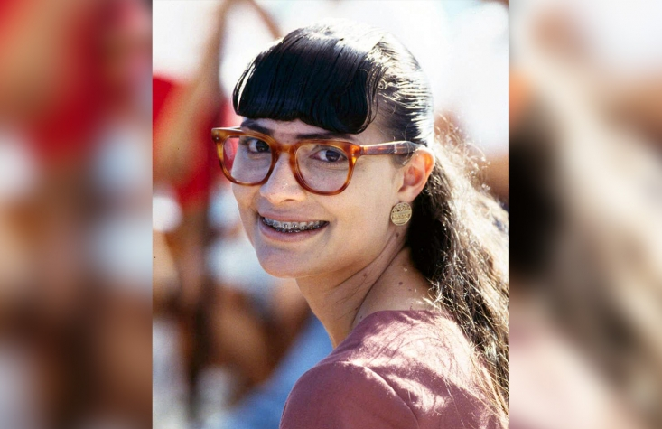

Ingresa tu nombre
¿Quieres saber 10 curiosidades de Yo soy Betty la fea?
10 curiosidades de "yo soy Betty la fea"
1.- En el 2010 entró al libro de los Guinness World Records como la telenovela más exitosa de la historia, al ser emitida en más de 180 países, ser doblada a 25 idiomas y al contar con al menos unas 28 adaptaciones alrededor del mundo.
2.- Se realizaron 22 adaptaciones
3.- El cuartel de las feas también tenía peleas entre ellas, unas daban autógrafos y fotos mientras que a otras eso les parecía terrible, por eso discutían a diario.
4.- Los brackets de Ana María Orozco de su personaje de Betty los tiraron a la basura por error, ya que ella los envolvió en un papel higiénico, cuando empezaron a grabar no aparecían y los encontraron en la basura, de allá los sacaron y con agua caliente los lavaron para que la actriz los usara.
5.- Siete millones de colombianos vieron el capítulo en que don Armando le dio a Betty su primer Beso. Ese número equivale a la población de Bogotá en la época de los 90.
6.- Desde su lanzamiento, en octubre de 1999, 'Yo soy Betty, la fea' se convirtió en el programa más visto de la televisión colombiana. En ese mes alcanzó 36 puntos de rating, cifra récord para el primer mes, que se incrementó hasta alcanzar un promedio de 45 puntos, con picos que han superado los 53.
7.- Cerca de 30.000 muñecas de Betty fueron distribuidas por toda Colombia.
8.- El capítulo final es reconocido como la producción televisiva más vista en Latinoamérica.
9.- El capítulo 162, del 20 de junio de 2000, tuvo una audiencia record de 54,7 puntos. Superó, y por bastante, los partidos de Colombia – Argentina y Colombia – Brasil por las eliminatorias al mundial de 2002.
10.- Al año de comenzar a grabarse la telenovela, al actor Jorge Enrique Abello, se le detectó una hipertrofia (ensanchamiento) en uno de sus ventrículos, como consecuencia de las emociones violentas que tenía que interpretar en su papel de "Armando Mendoza" y que lo puso en peligro durante varios años, debiendo así, hacerse controles cardiológicos anuales de por vida, ya que su condición era comparable a la de los atletas olímpicos, además de las personas que fallecen por muerte súbita.
Ingresa tu correo
¿Quieres saber las 10 mejores Piñericosas?
Las 10 mejores Piñericosas
1.-"TUSUNAMI Y MAREPOTO" El día del traspaso de mando el 2010, un fuerte remezón casi funó la ceremonia. El recién asumido Presi ratificó la alerta de “tusunami” generada por la ONEMI. Días después habló del 27 F y señaló: “Por el terremoto que remeció la tierra bajo nuestros pies y por el ‘marepoto’ que sacudió nuestras costas”.
2.-EL PAPELITO DE LOS 33 Tras el rescate de los mineros y en gira por Europa, la Primera Dama lo chantó justo cuando por vez “quinientas mil” quiso sacar el famoso papelito que contenía el mensaje de los mineros. Lo malo fue que todo el mundo cachó que lo llamaron a terreno.
3.-MATÓ A NICANOR PARRA En la ceremonia de inauguración de la Feria del Libro de la Plaza de Armas de Santiago, el 23 de abril de 2010, incluyó a Nicanor Parra en una lista de escritores fallecidos.
4.-EL LAURÉL: ARBOL SAGRADO MAPUCHE El 9 de octubre de 2010 se reunió con una comunidad mapuche y en su discurso juró a pies juntitos que había visto a las machis “alimentar el laurel, el árbol sagrado”. Los asistentes a la ceremonia quedaron marcando ocupado, pues el árbol sagrado para ellos es el canelo.
5.-DE CABEZA EN BAJOS DE MENA El entusiasta mandatario s se mandó flor de piquero entre los escombros de la población bajos de de mena de Puente Alto, en agosto del 2013. . Un acierto fotográfico convirtió el incidente en uno de los más viralizados de Piñera.
6.-LA FOTO EN EL ESCRITORIO DE OBAMA El 4 de junio de 2013, durante una visita a la Casa Blanca y una reunión con el presidente Barack Obama en la Oficina Oval, Piñera no aguantó la tentación y le pidió permiso para sentarse en el escritorio Resolute. El morocho no la podía creer y aseguró que era la primera vez que un mandatario le pedía algo así.
7.-CAMBIO LA CUNA DE NERUDA Cambió la cuna a Pablo Neruda El 22 de febrero de 2012, se mandó un discurso de miedo en Curicó. Lo malo es que en una nueva salida de libreto afirmó con toda seguridad que esa ciudad era la tierra natal del poeta Pablo Neruda, quien en realidad nació en Parral.
8.-¿QUIÉN ES VICTOR PARRA? El 26 de febrero de 2014 inauguraba un aeropuerto en Freire y fue cuando confundió el apellido del asesinado cantautor y activista Víctor Jara, a quien llamó “Víctor Parra”. A todas luces se enredó con el apellido de la cantautora y folklorista Violeta Parra.
9.-LA MUJER QUE DICE SI, NO ES DAMA En la XIII Cumbre de Jefes de Estado y de Gobierno en la localidad de Tuxtla, en México, el Presidente Sebastián Piñera hizo una analogía entre los políticos y las mujeres, que sacó ronchas: “¿Sabe usted cuál es la diferencia entre un político y una dama?” Cuando el político dice que “sí” quiere decir “tal vez”, cuando dice “tal vez” quiere decir que “no” y cuando dice que “no”, no es político… Cuando una dama dice que “no” quiere decir “tal vez”, cuando dice “tal vez” quiere decir que “sí”, cuando dice que “sí” no es dama”.
10.-RIETE CON ESTE BONUS TRACKS “Si usted maneja, no conduce”. “Es la misma bandera con que hemos ‘cubrido’ tantas veces los féretros de nuestros ‘mártis’ “Hemos logrado gran solución para proteger santuario de naturaleza punta choros, isla damas y ‘gabiota'” (vía Twitter). “… Cuando un niño deserta de la escuela o tiene su primer contacto con la droga, ese es el momento para intervenir como sociedad. Si no hacemos nada como ocurre hoy y esperamos, como pasa con el caso del niño ¿Cómo se llama? ¿Capurro?” (Por Cizarro) “Ha llegado el fin de año, tiempo en que nos preguntamos, qué hicimos bien, qué hicimos mal, qué ‘podimos’ haber hecho mejor”.